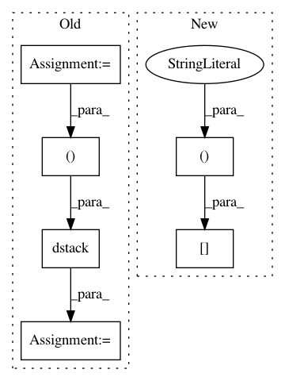

e3994bddae3cf254a2401e09e051c6b05bdd12c9,decisionmaker/montecarlo_numpy.py,Evaluation,distribute_cards,#Evaluation#Any#Any#Any#,24
Before Change
cards_combined = np.append(np.tile(mycards, reps=(iterations, 1)), shuffled, axis=1)[:,
player_id * card_amount_at_river - card_amount_at_river:card_amount_at_river * player_id]
cards = np.ceil(cards_combined / 4)
suits = cards_combined % 4 + 1
self.decks = np.dstack((cards, suits))
self.cards = self.decks[:, :, 0]
self.suits = self.decks[:, :, 1]
def run_evaluation(self, card1, card2, iterations):
self.start = time.time()
self.distribute_cards(card1, card2, iterations)
After Change
self.player_amount=2
cards_combined1 = np.append(np.tile(plr1_crds, resp=(iterations,1)), shuffled, axis=1)[:,0:card_amount_at_river]
cards_combined1 = np.append(np.tile(plr1_crds, resp=(iterations, 1)), shuffled, axis=1)[:,
0:card_amount_at_river]
def run_evaluation(self, card1, card2, iterations):
self.start = time.time()
self.distribute_cards(card1, card2, iterations)
In pattern: SUPERPATTERN
Frequency: 3
Non-data size: 6
Instances
Project Name: dickreuter/Poker
Commit Name: e3994bddae3cf254a2401e09e051c6b05bdd12c9
Time: 2016-10-15
Author: dickreuter@yahoo.com
File Name: decisionmaker/montecarlo_numpy.py
Class Name: Evaluation
Method Name: distribute_cards
Project Name: ANTsX/ANTsPy
Commit Name: 1ea4d793f13defcc2401259ac14dfb118fc4bd58
Time: 2018-11-23
Author: stnava@gmail.com
File Name: ants/utils/ndimage_to_list.py
Class Name:
Method Name: list_to_ndimage
Project Name: SpiNNakerManchester/sPyNNaker
Commit Name: 4469b110850672fbb26e1cad7e243c29891b762c
Time: 2019-08-27
Author: donal.k.fellows@manchester.ac.uk
File Name: spynnaker/pyNN/models/common/multi_spike_recorder.py
Class Name: MultiSpikeRecorder
Method Name: get_spikes